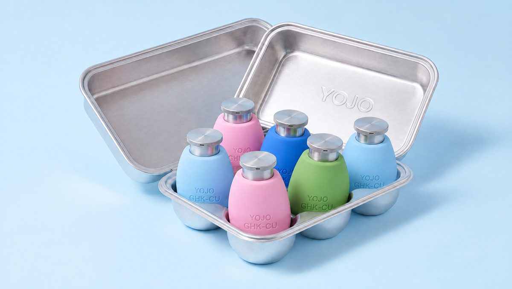
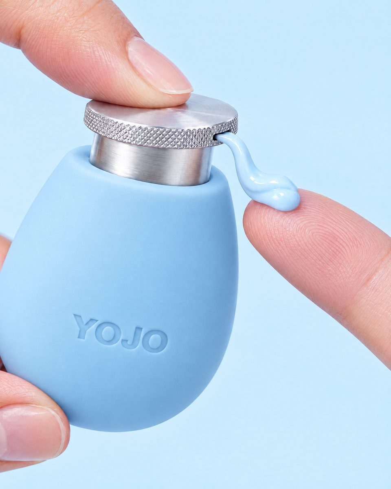

How the egg bottle goes together: a weighted silicone egg with a knurled silver press head that screws down to lock and an airless refill cup inside.


This is a stock mechanism. Many airless and lotion pumps already lock this way. Ask for it with a click detent so customers feel it lock, and a small engraved dot on the disc that points to a lock mark on the collar.
Optional upgrade: the same quarter turn swings the side slot behind a small lip on the collar, so the outlet can't drip or pick up lint.
Press the silver disc. About 0.2 ml leaves the side slot. A 30 ml cup gives roughly 150 presses.
Turn the head a quarter turn clockwise until it clicks. It stays up and can't be pressed. Safe for a bag.
Turn it a quarter turn back. It's ready to press.
Grip the collar band and unscrew the pump. Lift out the empty cup, peel the foil on a new one, drop it in and screw the pump back. Press 3 to 5 times to prime.
| Part | Material | How it's made | Source | Touches cream |
|---|---|---|---|---|
| Press disc | ABS, satin silver PVD, UV hardcoat | Injection molded with the knurl and side slot in the tool, then vacuum metallized and topcoated | Custom | No |
| Actuator insert | PP | Injection molded. Carries the outlet channel to the slot and the two lock lugs. The disc snaps over it. | Modified stock | Yes |
| Collar | PP, satin silver PVD, UV hardcoat | Two lock notches and a click bump on the rim. Screws onto the shell neck below. | Modified stock | No |
| Airless pump | PP/PE, metal-free fluid path | Stock airless pump with a quarter-turn up-lock, 0.2 ml dose, return spring | Stock | Yes |
| Refill cup | PP cup, PE follower piston, foil seal | Stock refillable airless cup, 30 ml. This is the repeat purchase. | Stock | Yes |
| Inner shell | PP or ABS, 1.5 mm wall | Injection molded egg with threaded neck and a weight pocket | Custom | No |
| Weight | Steel or zinc alloy, 50–80 g | Turned or die-cast, pressed into the shell pocket. Tune the mass on prototypes. | Custom | No |
| Silicone skin | Platinum-cure LSR, Shore 30–40A, soft-touch | LSR injection molded, YOJO and GHK-CU debossed in the tool. Stretches over the shell and comes off to wash. | Custom | No |
Why plated plastic instead of real metal. Almost every silver cap in a beauty store is molded plastic with a thin metal coating. It costs a fraction of machined aluminum, the knurl is molded in for free, and it is lighter, so the steel weight keeps the balance point low. The egg still feels heavy and solid because of that weight.
The trade-off is the knurled edge, where fingers rub. A UV hardcoat stops the silver from wearing through, and a satin finish hides wear better than mirror chrome. If samples wear too fast, upgrade to electroplated ABS, which has a thicker, tougher layer. Keep the weight real steel or zinc: that's the one place metal earns its cost.
| Item | Target | Why |
|---|---|---|
| Overall size | Ø 68 × 110 | Fits a hand and the carton cups |
| Press disc | Ø 36 × 5.5 | Wide enough to grip the knurl when turning |
| Pump stroke | 4 | Head travel when unlocked |
| Lock turn | ¼ turn, click detent | One motion, and you feel it lock |
| Skin wall | 3.5 | Soft feel without losing the egg shape |
| Bottom curve radius | ≥ 40 | A flatter bottom makes self-righting much easier (Fig. 3) |
| Weight | 50–80 g | Most of the mass, as low as possible |
| Fill · dose | 30 ml · 0.2 ml | About 150 presses per cup |
| Total mass | ≈ 200–240 g | Feels solid and premium in the hand |